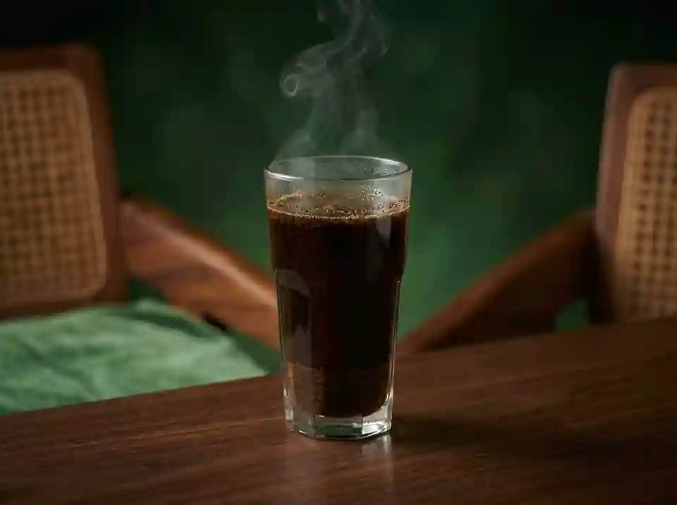
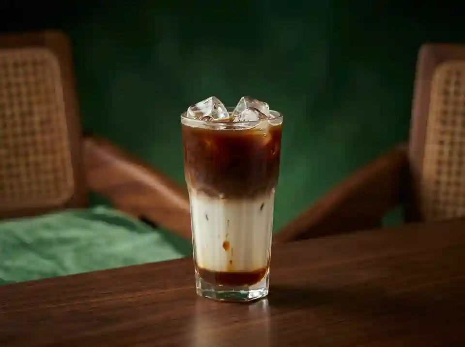
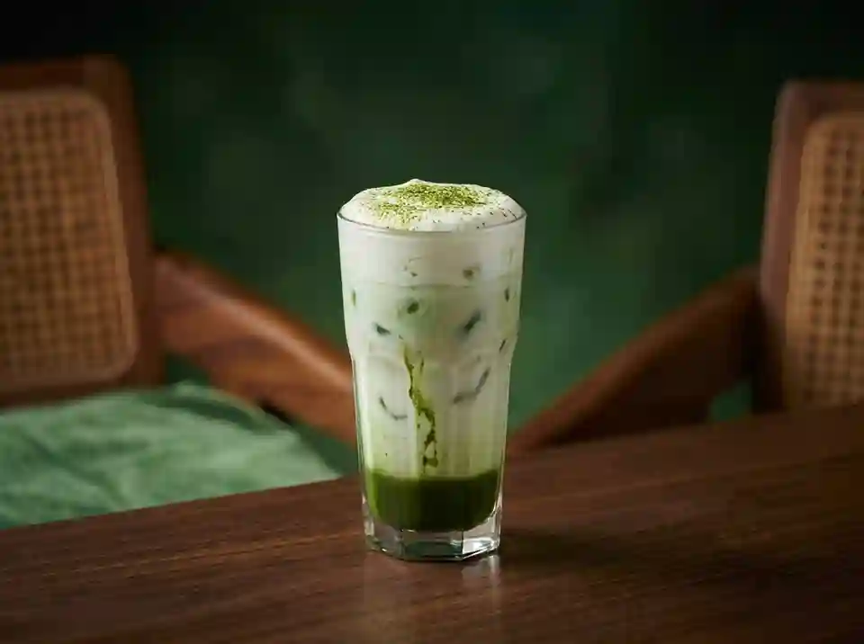
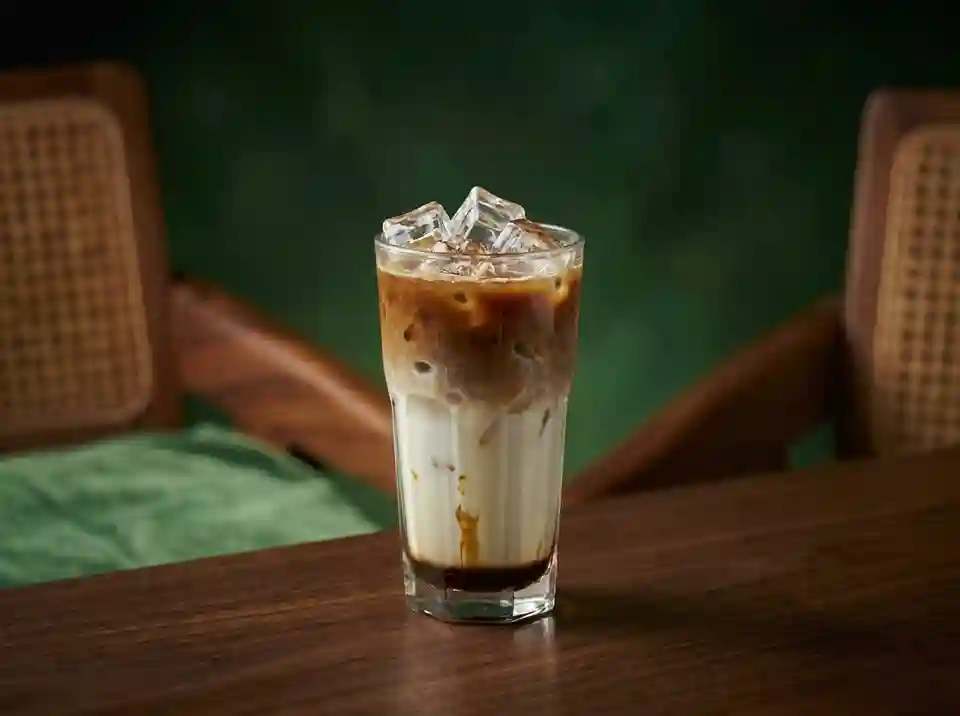

Pilih produk sesuai kebutuhan seduh harian, kantor, atau hadiah.
Kategori Produk
Paket seduh rumahan
Paket kantor mingguan
Paket tester untuk pelanggan baru
Galeri Produk

Kopi Tubruk Signature — seduhan biji kopi lokal Pekalongan dengan aroma
rempah yang khas dan konsisten, disajikan dalam gelas 250 ml seharga Rp18.000.

Cold Brew Aren — ekstraksi dingin selama 12 jam dipadukan manisnya gula aren
murni, rasa halus dan tidak terlalu asam, disajikan dalam gelas 250 ml seharga
Rp22.000.

Matcha Latte Cream — teh hijau Jepang murni dipadukan susu segar yang creamy
dan lembut, disajikan dalam gelas 250 ml seharga Rp22.000.

Baru Es Kopi Palm Sugar — kopi susu dingin dengan
gula aren asli yang manis alami, segar untuk hari yang panas, disajikan dalam gelas 250
ml seharga Rp24.000.